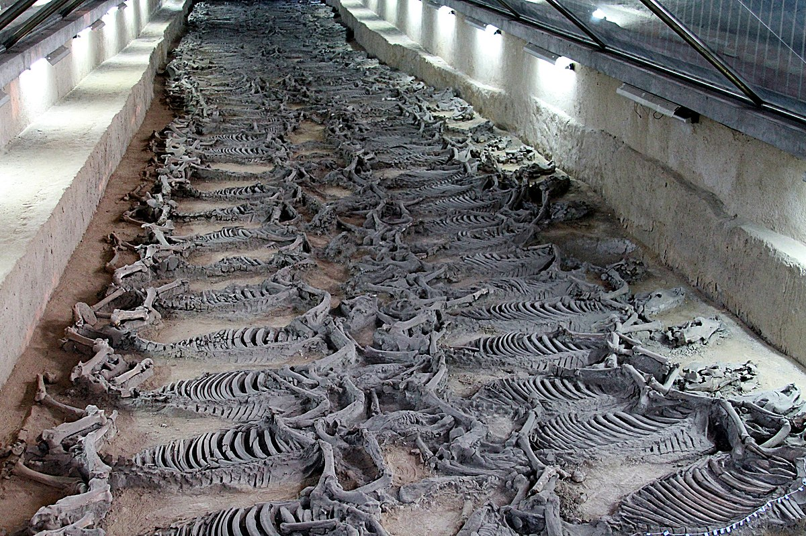

01 / 04
Museum of Qi State History
This is the most direct gateway to understanding the cultural character of Zibo. As the ancient capital of Qi, Linzi witnessed the most dynamic era of the Spring and Autumn and Warring States periods. From the artefacts on display to the spatial narrative of the entire venue, two keywords are emphasised: openness and power. Qi culture is not a dusty term found only in textbooks; it continues to shape the underlying character of this city today.

02 / 04
Horse Sacrifice Pit · Eastern Marvel
The Linzi Horse Sacrifice Pit is renowned for its massive scale and stands as physical evidence of the Qi State's formidable power. Confronted by the densely arranged archaeological remains, one feels a strong sense of temporal compression — the hegemons of the Spring and Autumn period, once abstract names on a page, suddenly become concrete, present in the very ground beneath your feet.

03 / 04
Ceramic & Glass Hometown · Boshan
Zibo's cultural appeal lies not only in its historical sites but also in the living crafts of today. Boshan ceramics, Boshan glass art, and inside-painting craftsmanship transform everyday objects into collectible works of aesthetic beauty. The most captivating thing here is that tradition is not merely exhibited — it is still being made and still being used.

04 / 04
Great Wall of Qi · China's Oldest Great Wall
Predating the Qin Great Wall, the Great Wall of Qi is the most profound historical line across this land. It is not merely a defensive structure; it is more like an age-spanning boundary crossing mountains and rivers. Standing at a high vantage point and looking back, you can intuitively understand why Zibo's cultural narrative always carries a sense of vastness.